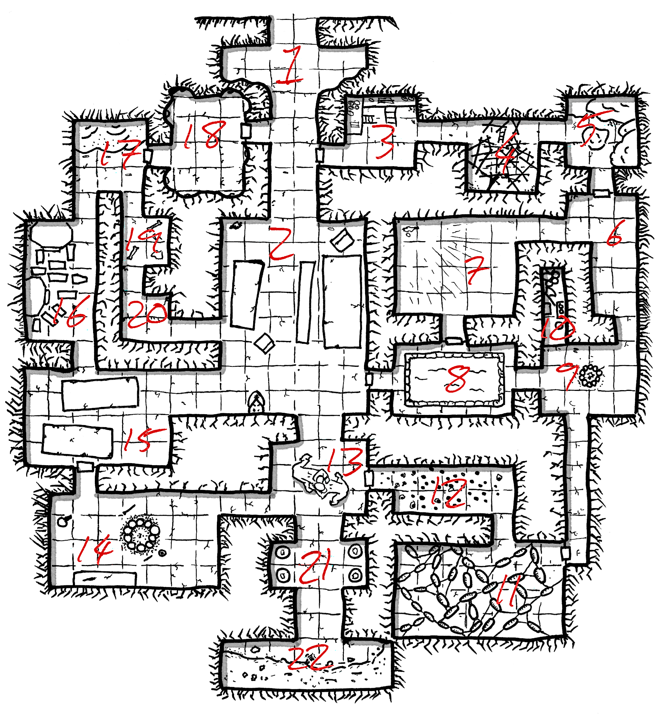

Maps by Roz Leahy
All upon Faroe speak Norse.
Those on the coasts will know a little of all the languages of the world.
Roll 1d8 at commencement of play.
After this, roll 1d6, and:
- If the previous days score was 2 or less, -2 to the dice roll.
- If the previous days score was 4 or more, +2 to the dice roll.
| # | Weather |
|---|---|
| -1 | Very Hot. |
| 0 | Hot. |
| 1 | Warm. |
| 2 | Overcast. |
| 3 | Fog. |
| 4 | Light Rain. |
| 5-6 | Heavy rain. |
| 7+ | Storm. |
Rain and Storms have a 30% chance of being Snow - doubled in the mountains. Consecutive results continue to be Snow.
Every 12 hours, an Encounter roll should be made. Use the location, reaction and surprise to determine goals as needed - most do not wander aimlessly.
| d100 | Encounter |
|---|---|
| 1-5 | 2d20 Bandits. |
| 6-10 | 2d12 Soldiers travelling to nearest Keep or City. |
| 11-13 | 1 Priest and 2d8 Cut Teeth (See 44.08). |
| 14-17 | 2d20 Goblins |
| 18-22 | 3d6 Ghouls |
| 23-25 | Herd of deer, 2-in-6 stalked by 3d6 hungry wolves. |
| 26-29 | Conflict - roll a d20 for each side |
| 30-33 | Corpse - roll a d20 to determine origin. |
| 34-44 | [If within 8 hexes of 42.05] Royal Wyvern |
| 45-60 | [If within 3 hexes of 40.02 or 41.06] 2d12 Skeletons |
| 61-65 | [If within 4 hexes of 36.04] 1d4 Brown Bears |
| 66-75 | [If within 4 hexes of 49.04] 2d8 Gnolls |
| 76-85 | [If within 3 hexes of 51.08] Manticore + 26 dogs |
| 86+ | [If night or heavy forest and within 4 hexes of 48.07 or 44.04] 2d20 Orcs. |
Atop the northern cliffs of Faroe, the 32 inhabitants of Lundtorpe dwell. The trees march to the very edge of the cliffs - floating trunks are common amongst the waters. A jetty of worked stone protrudes from a sea-cave - a carven spiral staircase allows access upwards to the village. If attacked, stones are rolled down this staircase. They are not worried about assault from the sea - it is the forest they fear. At night, the village is illuminated by many fires and torches.
Hlif (2HD, Maille, Battleaxe, Shield) admonishes any who allow their children to play alone. Hers have already been taken - she will pledge herself as a bondswoman to any who will help her revenge.
Once a fortnight, 1d20 Goblins from 44.02 try and sneak into the village at night, looking for children to beguile with their polished stones and roasted nuts. They flee violence, but wait in ambush in the forbidding darkness of the wood.
10 footmen, 5 skirmishers plus 3 fishing vessels.
The bark and flesh of the trees here slough away to black slime. The ground is bare earth, stained as if by oil. Through this kingdom of putrefaction slithers a Black Pudding, broken and sullied feathers protruding from it’s half-submerged bulk. It has learnt patience over the centuries of festering. If attacked, it reverts to the old ways of violence.
In the forest, a vessel is being prepared. It is a full 10’ across, made of clay enriched with ash made by burning the bones of Giants. Threads of gold and silver are woven throughout. Atop it sits Iric (3HD, Leather, Sword) clad in a voluminous multi-coloured robe.
To those who seem cautious or fearful, he explains in Norse that he has found this vessel and intends to await the owner to determine it’s purpose.
To those who seem mercenary, he offers work - the vessel requires a glaze of storied blood. For each Human or Giant Animal body with greater than 3HD, he trades one of the following:
After 20HD worth of bodies have been brought to him, he casts Magic Jar, stripping naked and climbing into the vessel, sealing it behind him with a lid of gold. In a voice resonating from the vessel, he asks to be cast into the sea. In reward for doing so, he leaves them any unclaimed rewards above and his material components - they have left in his robe.
Iric is able to cast the following spells - in human form, he has the noted number of components. Once in the vessel, he transcends the need for components, and can cast all once per day. Animate Dead (1), Colour Spray (2), Hold Person (1), Lightning Bolt (2), Water Breathing (5).
The burnt remains of a merchant caravan, the guards left to rot. The stone-tipped javelins used to kill them are still present. A chaotic tracks leads to 49.04.
In the river bathes a Giant, lower jaw ripped away long ago. Her tongue lolls free. She grips a thick 20’ chain of silver - at the end of it, a sleek whale, too weak to strain against the chain now. The bones of dozens of such creatures stud the riverbanks.
If attacked, she uses the chained whale as a grotesque flail. If combat turns against her, she digs in the riverbank for the Blood of Command.
Half-buried in the riverbank, the goods she carried away whilst the mansions burnt (Monstrous III):
A wall of earth and stakes surrounds the burgeoning town of Axlarhagi. Not one stone from Giantish times sits within the boundaries - everything is fresh-quarried or wooden. The wide, slow river is used for the construction of ships - many of the 475 living here are involved in this industry, or else sail upon them for plunder.
Jarl Hunbogi (4HD, Full Length Maille, Greatsword) plots and schemes - he knows that Axlarhagi is second only to Borg - no court but the King’s rivals his own. Christian priests are not mocked in his hall, but act as envoys for foreign lords, passing words in their old tongue. He has no love of that church but covets the Jotunstoll. For the time being, he plays the loyal servant of Vagn - building his own reputation has a fair-handed ruler who respects loyalty. Any who aid the realm of Faroe and report it to Hunbogi are paid 1000sp per act, and given a feast in their honour.
His court are loyal to Hunbogi first - if an open bid for the throne was made, they would happily throw their lot in with the usurper. All remember that Vagn himself stole that throne. He would not work with Ulfr of Hwicce, worried about a likely betrayal. He would not see himself Jarl for a new king.
Æstrid (3HD, Leather, Longbow, Battleaxe), wife to Hunbogi and cousin to Vagn, confers with the pagan priests and witches alike. She would hire a magician to work as her own agent to see both her family and husband perish, leaving her as a final inheritor of the throne. Any displaying potential prowess as practitioners are trailed for three days before being asked for a clandestine meeting. In this pursuit she is willing to worship any demon, or contact any dark god.
Raiders rich on plunger swagger through the streets, eager to prove themselves against all comers in drunken bouts - wagering fortunes and reputations. When not amongst them, the warriors of Hunbogi try and keep them to the docks.
20 armoured footmen, 50 footmen, 50 skirmishers, 5 karvi plus 3 fishing boats.
A huge man, easily 8’ tall, lifts a wagon before dunking his head into the river to drink deeply. He greets any passers-by in a loud voice free of malice or guile. To any who ask what he is doing here, he explains that he not welcome in the settlements of Faroe - his strength matched only by his hunger. For some time, he served in the court of Hunbogi, but was expelled for his honesty. He is not sure what to do with himself, being an exile without crime. He is happy to sign up with any willing to take him, but will not see innocents harmed.
HD 5 / Cannot wear armour / +1 to all damage dealt. / Requires triple rations.
A growing pit excavation comes to dwarf the hamlet. The remaining 47 inhabitants are involved in the digging. The children pick through the earth and extract the bones, keeping them safe in the now-empty pigsties. Laughter is rare, except when the adults fall deeper into their drink. All are broken - the warriors are already dead, and none dares attempt another message under cover of night.
Overseeing this is a nameless man, clad in mail of pale construction. Shadows flicker like flames in his presence. A Wraith dwells within him, hollowing him out and making him a living tomb. He wields a grave-stained blade of corroded bronze. If taking more than 10 damage, he flees to 40.03 and warns Uluum of the threat to their plans.
Once a week, under cover of night, 20 skeletons collect the barrows full of bones and transport them back to 40.03.
HD 5* / AC as Maille/ 1d6 Damage, applied to Constitution.
*Harmed only by silver weapons and magic.
Beneath a waterfall, Saoirse (2HD, Leather, Bow, Sword) dwells. She lives as a thief, sneaking into Axlarhagi and robbing the pillagers when they collapse from drink. She originally planned to save enough for the passage back to Ruislip. She has uses a Cloak of Hands. She is happy to sell some of her hoard - or, for 200sp, participate in break-ins in Axlarhagi.
Her accumulated stash (Bandits II):
From trees hang rats and frogs, faces swollen, attached by a single rear limb. From the centre of these grisly decorations, the sound of childish laughter from throats roughened. A crude structure of sticks and woven branches houses 32 Goblins and their 4 captives - children stolen from 43.01. 1d20 Goblins are currently abroad in the wood, with a 5% chance of 1d6 returning every Turn. The Goblins try and play games with the children, but do not understand why they cry when hurt or at their many cruelties. In 3 days, they will grow bored, and leave the children in the wood to die. The interior of the structure, and many of the goblins, wear flowers with a pungent, sweet smell.
The Goblins have accidentally acquired a small hoard (Monstrous II):
A village of wood built beside a river, heavy with nets. 58 live here in fear - the soil and the water is turning to poison, tainted with some indelible blackening substance. The garrison of Fulsteinn decline to investigate - their leader believing the petty troubles of the villagers to be beneath him.
Thorgerd (1HD, Quarterstaff) is the venerated elder of the settlement. The villagers say that when her eyes were put out, she was gifted sight beyond the physical. The creeping taint terrifies her, but she is not willing to forgo the home that has raised ten generations of her family. She knows how to cast Circle of Protection - if the ink required for the tattoos can be brought to her, she would bind the evil that besets the village, given protection.
7 footmen, 5 skirmishers plus one fishing boat.
A dome of rough-hewn stone, the size of a castle. The upper third is riddled with holes wide enough to permit a horse. From these hang ladders, pulled up at the horn-blast of a scout. This Giantish structure of unknown purpose now serves as a fort. Manned by 80 warriors and led by Ingjald (3HD, Full Length Maille, Two-Handed Axe) - a favourite nephew of King Vagn. He is ill-loved by his men - a poor leader and liable to stupidity, he visits wrath upon those who would question his decisions. If he is harmed, Vagn’s retaliation is merciless.
Their occupation of this structure disturbed a Black Pudding which had festered in the soil since the liberated crawled up the structure and slit the throats of the huntings birds that roosted there. It slithered beneath the surface and now broods in 47.01.
A tiny hovel of stacked stone contains the skeleton of a hermit. They had no possessions in life.
The youth of Klaholm know the standing challenge - sail to Kark and be king by your own hand. When the frozen ciders flow, all boast of their plans to rig a fishing boat for war and seize their own destiny. When the sun dawns, all return to their labours. The 48 dwelling here have dreamt of Kark at least once.
Skap (3HD, Maille, Throwing Axe, Battleaxe) alone has made the trip once, his siblings in tow. He returned by luck, alone and dying at the bottom of a boat, one arm torn clean from its socket. He does not tell why, and allows the youths their idle dreams.
6 footmen, 6 skirmishers plus 3 fishing boats.
A stone fort in the forest flies no flag but carries the stink of death. A troop of 50 skeletons, unarmoured and wielding knives, surround the central keep. The keep has three floors.
The lowest floor contains a mound of stones, stolen from a cairn. If these are returned, the figure in Vaitoft dissipates.
The second floor contains Uluum (4HD, Unarmoured, Unarmed) and their honour-guard of nine Zombies wearing ancient bronze plate armour and wielding warhammers resembling talons clenched into fists. The undead all serve Uluum - if they are slain, all become mindless, acting only to defend their corporeal forms.
Uluum is inhuman, appearing semi-aquatic with a curled tail and a light-blue fur. They wear heaped furs of strange hues - all attacks against them are made at -6 to hit. Their mastery of antedeluvian sorcery is unparalleled - they need no components for their spells. In combat, they cast the following spells in order, one per round: Confusion, Protection from Missiles, Fear, none as they channel the next spell, Disintegrate every round thereafter. If they take any damage, they cast Fly and flee through a window, cursing their attackers in an alien tongue. They will dedicate themselves to revenge.
The third floor contains the wealth of Uluum (Magic User IV):
The mountains here all lean towards a central peak, as if yearning. Atop the central mountain, a Peak Crown flower blooms. The climb to the peak takes a full day - any attempting the climb make a Physique save, those failing suffering 1d6 damage. If a 6 is rolled, roll again and add the result, representing a disaster. The use of ropes and spikes allows the Physique save to be re-rolled.
A small stone hut is marked with warnings - horse-skulls nailed to rough-hewn posts. Within dwells Øybiorn, a Ghoul who has converted to Christianity. They fast and meditate within the hut, seeking a worthy cause in which to seek absolution for what they have done. They wear a mask of iron, the key long since thrown into the ocean. They are able to read, write and speak Latin and Norse. At night, they paw through their Bible, weather-worn in the extreme.
A Giantish mansion of stone now houses 207. Signs of modification are widespread, as are those sections which have crumbled beneath the weight of time. A sprawl of wooden buildings cluster in the shadow of the stone building, housing another 200. A funeral air grips the town - they have been unable to access the mine for months. Smelters sit silent, fires dead. Warriors watch from laboriously bored windows in the manse.
Within the echoing halls of Malmberget sits Jarl Ljot (4HD, Byzantium Plate, Mace, Shield) unhappy daughter of King Vagn. She knows the lack of reinforcements is deliberate - her father would much prefer one of his lackeys take ownership of Malmberget. She is willing to hear out any who think they could help reconquer the mine - offering a reward of 5000sp to any achieving such a goal.
Within the halls, skittish scholars meet to divine the purpose of Giantish artefacts. They are widely considered perverse by their fellow Norsefolk. They will approach adventurers, offering 200sp for any information on Giantish artefacts, ruins or history. They have a 20% chance of being able to identify any artefact brought to them - doing so waiving one such reward.
20 armoured footmen, 20 footmen, 40 skirmishers.
A barrow stands open. Smoke rises from a chimney, and light spills from the doorway. Within, Veturlidi (1HD, None, None) tends to a huge bath of blood - imbued with Cure Critical Wounds, and having 40HD of blood within it. The bowl is the skullcap of a giant. Veturlidi is wasting away, mind fixated on their duty. They croak a demand for a single silver piece for access to the pool. If Veturlidi is killed, a Wraith emerges from the pool of blood and attacks the slayers - any falling to its blade becoming the new tenders of the pool. The silver Veturlidi is paid is eaten - 600 such coins sit within a belly hidden beneath a ragged cloak.
A rusted cage of iron falls to pieces slowly, grass entwining itself around the fallen bars. A few people pick amongst the debris, looking for saleable chunks.
At the fork of the river dwells Uggrpaddo, a toad swollen on malice. The river here is foul and stinking, sluggish through a bog infested with amphibians bloated with novel poisons. No birds fly here.
The first story is a giant fed her a drop of blood from his finger every day for two years. She grew so big that she bit off his finger and fled. She still feasts upon this prodigious digit, or so the story goes.
The second story is that she ate a priest, and learnt how to speak to the river. She bid it slow, the better to spawn her young. This is why the fork of the river runs so slow, yet downstream the river runs clean and fast - or so the story goes.
Within her mouth she shelters a brood of giant toads. Those brought into her mouth are torn into by these fist-sized tadpoles. In a few years, they will consume their mother from the inside out and spread across Faroe.
HD 6 / AC as Maille/ Damage 1d6+2 / If the damage dice shows 1 or 2, this indicates being entrapped in her long, sticky tongue. Victims are drawn back to the mouth, wherein they take 2d6 damage per round as her brood consume them alive. This is excruciating, forgoing the possibility of action.
The forest is heavy with snare and trap. From the branches hang mobiles of bone, animal and human mixed as if in deliberate disrespect. Twelve Elves (Leather, Shortbow, Sword) defend this hex from all trespassers, harassing them with flint-tipped arrows and trying to shepherd them into 10’ pit-traps (2-in-6 during any encounter). Beneath an ancient tree is the cave they emerged from decades ago. The walls are marked with failed attempts at writing and drawing.
Within their cave is treasure they do not understand (Monstrous II):
A cave used for hibernating bears for generations. The floor is littered with 67 fecal plugs. There is a 20% chance of a Brown Bear being present. Per turn spent here, there is a 3-in-6 chance of 1d4 Brown Bears returning to their cave. Gathering all of the plugs takes 2 turns.
Brown Bear / HD 5+5 / AC as Leather and Shield / Damage 1d6+2 / A to-hit roll of 24+ deals an additional 2d6 damage.
From the face of a mountain shrouded in firs jut walls worked for inhuman stature. One of the earliest dwellings of the giants who carved their way out from the mountains.
In the depths, a dread animus dwells within the skull of a giant long-dead. Through the halls it slithers, driving the inheritors of its kingdom before it.
The approach to the entrance shows signs of limited foraging.
The walls and floor are of once-smooth worked stone, now chipped, scratched and filthy. Ceilings are 20’ high and arched. There is no light, and the air is cold and crisp. Doors in this complex are reinforced and made of treated wood, heavy with tar. They are built for Giants, but have a small human-scale doors constructed within them.
Per Turn, after a loud sound or at the end of a Combat Round - roll a d6 and consult the Encounter Chart.
| 1d6 | Encounter |
|---|---|
| 1-3 | From a random direction, the Giant’s Skull approaches. |
| 4+ | No Encounter. |
Giant’s Skull
Three foot of bone makes up the cranial vault of this immense skull, brow heavy, teeth long and gore-rich. From each opening protrudes tendrils of animate darkness filled with distant stars. From the mouth, a single body of this immaterial stuff, slithering along the ground like a snail. It is blind, sensitive only to sound and touch. It is mindless - attacking all life it discovers. Those slain by it crumble to ash. It is able to smash down a door in 3 rounds.
HD 6* / AC as Plate / Damage 1d6, dealt to Constitution.
*Supernatural HP.

1
A heap of earth is all that remains of once proud double doors, sat between walls of stone enclosing a carved entrance into the stone of the mountain. Some vegetation clusters, but much appears to have been pulled up.
2
Mouldering tapestries with fading colours hang limp against the walls, grime-crusted. Wooden furniture has long since formed heaps of rotted mulch, whilst stone furniture built for giants stands high. Mounted on the Southern wall is the skull of a whale, mouth open.
Beneath the tables and benches, rat-traps made of bone and scraps of metal can be found. 4 of them have skewered prey.
3
High shelves, accessible by ladder, contain dried berries and wild vegetables. 4 Goblins with wooden javelins (-1 damage) lurk here. If hostile, they pelt any climbing the ladders with javelins - any damage of 3+ enough to cause a fall, dealing d6 damage. If force appears overwhelming, the Goblins will try and haul up the ladders.
In total, there are 20 days worth of food stored on these shelves.
4
A latticework of branches forms a second floor up the upper reaches of this chamber. This floor is 12’ up. 21 Goblins are on this latticework. They have small hatchets - 6 have wooden javelins. They have a rope ladder. The latticework is highly flammable, and could support 2 additional humans before collapsing.
The floor is littered with dropped and excreted debris from the Goblins above.
5
Heaps of shit and rotten food hide a single Giantish coin, worth 200sp. Any searching through the filth must make a Physique save to avoid being violently ill. The sound of flies is loud and pressing.
6
The walls are plated in brass, polished to a mirror finish before being allowed to tarnish - now they give only vague indications of appearances. Light reflected by the mirrors takes on a bloody hue. To the south, a dim glow, smoke and heat.
7
The floor of this chamber slopes to the North-East, showing signs of being laboriously chisels and polished to do so. A single Giantish coin (200sp) and a haunch of boar-meat sit at the bottom of this slope. Above, 12’ up, a floor constructed of branches and scrap wood. On this floor lurk 12 Goblins, each with wooden javelins (-1 damage) and two barrels of grease. They have a rope ladder.
If enemies (or prey) enter the slope, they throw down the barrels, rending the slope incredibly slippery. Then they pelt those trapped with javelins. If the situation is dire, they will try and ignite the grease.
8
Most of this chamber is a pool of natural spring water - shockingly cold and very fresh. The walls bare a blue-and-white mosaic detailing sea-life in exaggerated detail. The walls and floor here are clean barring puddles of dirty water. Wet footprints of small, clawed feet show movement in all directions. To the East, dim light, heat and smoke.
9
A low glow of embers illuminates this room, as well as the smell of smoke. Heat wafts into the adjoining passages. From the ceiling hang many bundles of herbs, berries and vegetables, being slowly dried out by the slow-burning fire below. In the North Eastern corner, a section of wall is a secret door. The outline is distinct enough to cast a shadow - a flap of cunningly worked stone hides a bronze keyhole. The mechanism within is simple but heavy - conventional picks would break beneath the weight.
10
This narrow chambers hides the wealth the Giants would deny their erstwhile property. (Monstrous III):
11
The upper reaches of this chamber are filled with hammocks, forming chains from one wall to another. From them hang ropes. The floor is littered with dropped debris. Within the hammocks are 30 Goblins. Each time the room is crossed, there is a 30% chance of 1d4 awakening, each of whom has a 2-in-6 chance of noticing those passing below. Any loud sound awakens all of them.
12
This narrow chamber is densely filled with ropes hanging from the ceiling. Each terminates in a cluster of metal objects - moving against them causes a loud clanging noise, awakening the Goblins in 11 and causing an Encounter roll. There are 100 such ropes. Each has 1d6*20sp worth of silver and gold at the end - this being a mixture of rings, pieces of plate and cutlery, all of which are worked with designs of hunting and construction. Any serious attempt to gather these will definitely summon the Giant’s Skull.
13
In the centre of this chamber, a pair of figures in Giant proportions wrestle, both nude. One is gouging out the eyes of another, already holding the victim’s ear between their teeth. The fingernails of both figures are made of solid gold - requiring a careful (1 Turn) climb and chiselling out (1 Turn) - such a noise definitely attracting the attention of the Giant’s Skull. A fall from the statue would cause d6 damage. Each nail is worth 100sp.
14
The long dead remains of fires are surrounded by a great variety of cooking utensils made of stone and wood - many are designed for Giantish hand, paired with smaller versions for human use. None are valuable in themselves.
15
Huge tables of stone with attendant benches fill this space. 4 Goblins chase rats across the table-tops - too busy to pay attention to interlopers.
16
Two stone caskets, upright, run from floor to ceiling. Clustered around them like roots to a tree, conventionally sized stone coffins. The smaller contain human bones, the lids heavily scratched from the inside. The larger contain mummified Giants, coated in extremely flammable sap which has halted decay. Both are scarred, nude and bear Giantish knives, usable as Greatswords. Each has a large gold ring, wearable as a bracer and worth 500sp.
17
Heaps of ash fill this room, all a uniform dark grey. There is no other sign of fire in this chamber. Sifting through the ash, one can find boot-buckles and worthless beard-rings.
18
Carved into the walls are 8 niches, each large enough to house a horse. Rusted rings of bronze are set into the stone within each niche. A shallow hollow, as wide as a dinner-plate, has been carved into each. Within one, 2 Goblins lurk. If hostile, they make a terrible noise before fleeing to 3, attracting the attention of the Giant’s Skull.
19
Gnawed bones rest amongst scraps of leather and bark. Rats cautiously pick between them, watching for traps.
20
Niches carved in the walls here are now empty, all sitting at chest-height or lower. Within the lowest, a bronze knife has been hidden, a dark-green substance coating the blade. This poison has long since lost it’s potency.
21
Four smaller statues flank this chamber, each depicting a human in archaic armour made of several large discs connected by scales. On their heads their wear helms crested with fur and protruding horns. If touched, the armour is revealed as real, made of bronze and covered in a thick layer of grey dust. It is Heavy Armour - each set is worth 200sp.
22
The back half of this chamber has collapsed long ago. Beneath the rubble, the bones of giant protrude - an outstretched bony fist hides a small brass key which opens the door to 10. There is no sign of a skull from the visible bones.
Atop the highest peak in this hex, a runestone with ancient Norse runes carved in deep. It reads “All enmity may flow from us to twisted tallfellows and captors. By this stone, Thrornir casts down his life for freedom.”
By a rock, the discarded possessions of three wanderers. Of the bodies, only splinters of bone remain. The possessions: three pairs of boots, three knives, two swords, an axe, a shortbow, two shields, a shirt of ruined maille, two blood-stained maille shirts, twenty arrows, a small Bible in Greek, an ivory statuette of Thor, two marriage-bands and a lump of fossilised wood.
A pit, 60’ in diameter, scooped directly out of the earth and stone. An immense green chain of oxidised bronze sits at the bottom. From above, the floor seems off-white. This is due to the bone splinters which have accumulated here. The walls of the pit are studded with niches, each 6’ wide, 5’ deep and 3’ tall. The lower reaches of these are occupied - 70 Ghouls dwell here, most in a state of torpor from lack of food. Any blood spilt in the area awakens all of them, who begin crawling up and out to seek fresh meat.
Per Turn, there is a 1-in-6 chance of 1d6 Ghouls returning from their hunts. They are always starving.
The tunnels of Malmberget Mine are not silent, although no pick sounds against stone. In the digging, a cavern containing 50 Orcs was excavated. They hacked through the miners, recapturing much ore wrested from the mountain, swelling their numbers to 272.
Of the original 50, 34 have survived, each centuries old. They wear Heavy Armour made of large, single shells and wield Two-Handed Axes, the heads made of a single piece of sharpened shell. They have 4HD, and each leads 7 of the younger Orcs.
Each week, they grow another 20 Orcs. Once they are over 300 in number, they will assault Malmberget under the cover of night.
Following the tunnels of the mine, one eventually finds the cavern wherein the Orcs waited - and the treasure buried with them (Monstrous IV):
Hidden between the peaks and beneath the evergreen canopies, the 47 of Haugr should live richly on what they hunt and gather on the slopes. The outer dwellings stand empty. They have powerful taboos against interference with Giantish ruins - any bearing items of such origin are forced to leave. Blood has been spilled on this matter. Those accidentally becoming tainted are ritually mock-drowned in the stream to the North-East.
Hundi (3HD, Leather, Sword, Longbow) can climb a tree faster than any other in the village. He breeds large, fierce dogs and trades them in Fulsteinn - each going for 50sp. He has 8 for sale.
The villagers stockpile most of what they gather - once every three months, 20 Gnolls from 49.04 arrive and demand tribute. The people of Haugr have no desire to call attention to themselves, and hand it over. Every year, they grow thinner.
15 skirmishers.
A drystone keep, half-crumbled yet still sheltering warriors - 40 Gnolls of ancient origin, who never surrendered to the Giantish yoke. Their swords are made of bronze, and they are lightly armoured with furs and shields of wicker. All carry 5 stone-tipped javelins. All are bound to a single leader, who has 4HD and wears Heavy Armour made from a Giant’s skull. They see the current inhabitants of Faroe as tainted by Giantish custom, and would see the peninsula razed.
Within the ruined keep, they store their hoard, long-gathered (Bandits III):
A fort of fresh-hewn wood perches atop a cliff-face, straddling a river which becomes a waterfall. Within are 90 warriors, watching to the East - rumblings of marching dead and vampiric reindeer abound. All complain bitterly of the cold in the mountains, wrapped heavily in furs and huddling around their fires.
They are led by Jarl Kraki (3HD, Maille, Sword, Throwing Axe, Javelin) who suspects this posting is more about keeping him away from court. He is correct - King Vagn does not brook unsolicited advice, nor does he tolerate dissent.
On dark nights, Ozur (1HD, Maille, Shield, Sword) sneaks out from the fort to meet with Raghild of Turnholm. The other warriors know, but keep this a secret from Kraki.
35 armoured footmen, 45 footmen, 20 skirmishers.
Of Husvik, only 18 souls remain. Unbeknownst to them, an Invisible Stalker makes sport of them. Any trying to leave the village to seek help are dispatched, the body deposited in their own bed. Only the elderly and children are left, the Invisible Stalker taking its time with these final morsels.
The Stalker wields a stone Two-Handed Sword. If dispatched, this stone blade retains its invisibility, adding +3 to hit.
A house of untreated logs is hidden amongst the trees. All about are the skulls of animals, each with a perfect hole through the side. Here dwells Osvig (4HD, Maille, Sling, Sword, Shield), famed for putting out the eye of a sea-monster with a single shot.
To ones known as no friends of King Vagn, he would teach his techniques of accuracy, adding +2 to hit with Slings.
For those planning an attack upon the king, he would be able to provide 17 Bloodballs. (&T)
A patch of dead trees betrays the cave wherein dwells a Wyvern who refused to remove his rings - all talons wrapped about with gold, and a broken crown hanging from a reptile neck. A brother to Vagn neutralised by castration and now bent only on slaughter.
The remains of those who have attempted to kill the Wyvern are deposited at sea - no wealth accumulates here.
He is in this lair once every three nights, spending the rest of the time on the wing.
A huge elk claims dominion over this stretch of forest - any trying to enter find themselves confronted. Those providing an offering of grain or fruit are allowed passage - others are met by violence.
Trapped beneath a stone in the valley is a Dryad - she has forgotten how to speak to the animals. The elk keeps her here, and tries to learn from her.
4HD / AC as Leather / Damage 1d6
A valley between the mountains presses close to the river, the forestation especially heavy. In the tranquil dark afforded by the canopy, pearlescent slugs search for an absent protector of this place.
Near the peak of a lower mountain, a small cave. Within, a hollow of earth, a Stone Knife (&T) resting in the centre.
The mountain bears a second skin - a herd of reindeer, watched over by the 85 residents of Volle. An ancient village of stone houses and hide tents, high enough in the mountains to be afforded freedom. The people of Volle speak their own language amongst themselves, and Norse to outsiders.
Larsa (4HD, Leather, Bow, Spear, Knife) watches all visitors carefully. The people of Volle do not trust low-landers. At the first sign of trouble, he will demand they leave or duel him with knives. His scarred forearms reveal many such fights before.
40 skirmishers.
Amidst the snow-capped peaks, a pool of hot water bubbles. Those relaxing within it can, in the burble of the water, hear a voice - a Subtle Spirit, offering to join such wanderers on their journey. If accepted into service, it requires 2 rations be burnt a night. Any failure to do so causes it to perish.
Hidden in the near-inaccessible valley between two snow-bound peaks, a strange contraption of blue-green metal, clearly tangled and ruined. An ovoid centre, 50’ long, is surrounded by struts and bars. Hidden beneath the snowline, an aperture allowing access to the interior. Within are frozen bodies of semi-aquatic creatures with blue fur and curled tails. Amongst the wreckage is a slender bronze rod. If flicked at a target, a gout of lightning is released, dealing 4d6 damage - allowing a Dodge Save to avoid. The rod contains another 14 charges.
The face of a mountain is studded with towers of stacked stone, conical in aspect from generational repair. 76 dwell in these towers of stone, watching their flocks of sheep and hardy, small cows. Dogs run rampant, all trained to defend the herds will their lives - the wolves of the mountains are hungry.
Raghild (2HD, Maille, Javelin, Sword) only recently assumed responsibility for the village, her father passing peacefully. As often as her newfound duty allows, she sneaks into the mountains to meet Ozur, a warrior posted in Fort Kalbrekka. He will not let her abandon her village or her duty.
5 footmen 10 skirmishers.
A small cluster of houses by the fork of the river attends an outsized collection of fields and paddocks. All of the 32 in Breidrtorp are adults, worked to the bone tending to the fields, flocks, fish and bees. Everything they produce is bundled up and taken to Borg. All are paid well, but none have the ability to spend it once their labours cease. Their only joy is the plentiful beer and mead they have and indulge in heavily.
Disputes and questions are deferred to Borg - none in Breidrtorp have the energy for such things.
In the forests, the sound of many swine can be heard. Amongst them dwells Gunbjorn, who can train a boar to act as a dog. For 75sp, he will sell one of his trained boar - he trains 4 each season. If asked what he intends to do with his huge sounder of swine, he becomes withdrawn and pensive.
Trained boar act as dogs, but have 2HD and deal +1 damage on the charge due to their tusks.
This stretch of river is haunted by 6 Wraiths. There is no obvious tomb from which they emerge. Traitors threw them into the riverbed, still clad in their armour. Their bones moulder there, and the chief conspirator of their slaughter sits upon the Jotunstoll. If pleaded with, they would spare a group who promised to kill King Vagn - but would keep a hostage.
The barrow complex here is gutted, and its entrails made to dance. 30 skeletons toil at the unopened mounds, clad in armour made from unaccounted-for scraps. Nearby, a heap of swords of stolen design. Controlling them is Hring (4HD, Maille, Revenant Sword (&T)) - once a warrior, now set to command the dead after a catastrophic shipwreck. He does not know what he seeks, only that he requires safety and assurance. One of the opened mounds serves as his lair, a chimney dug into the roof. He sleeps restlessly during the day, dreaming of drowning. During the night, he chants rituals to imbue old bones with new life.
The skeletons are sent abroad to find new, fresher bones. Hring orders them to strip away all flesh before such victims are brought to him. The trees hang with such remains, and are heavy with carrion birds.
The excavations have resulted in a small hoard (Tomb IV):
In the untrodden depths of the forest, a fallen stone temple - ringed with pillars which once supported a round dome. Within is a wretch, small and forgotten. Their eyes and mind burn, and they are at war with themselves. The fire within has already consumed their memory. They act erratically, and are terrified of water.
Injured, they bleed flames which seek new hosts. Those touched must make a Physique Save, or have their mind ignited. Every month, such a victim loses 1HD. When it hits 0, they are consumed utterly, left a scared, memoryless wreck - their blood another vector for infection.
Removing such a curse would need a magician and the gathering of potent reagents.
HD 3 / AC as Plate and Shield / Damage 1d6
The woods shake with the sound of vile delights. 96 Goblins cavort here. Some lead the captured people of Brandval with rope like farm animals, whilst others jump upon their backs and tear off their ears, using switches of nettle and bramble to goad their unwilling mounts to greater speed. Of the 40 humans, five are already dead. The Goblins are drunk on looted mead - taking -2 to hit, and unable to co-ordinate meaningful defences.
Their trail of destruction could be followed up to the mountains.
Brandval is a scene of devastation. Several buildings have been burnt down, animals cruelly tortured and all contents of the homes emptied out into the village square. The devastation is total. Hiding amidst the wreckage, two survivors - Hallgrim and Herdis, sisters. They are unable to speak of what happened, but can point in the direction the marauders went - North West.
A strange bend in the river has birthed an ox-bow lake. Visible within this lake, a cave opening. Within this natural cavern dwell light-drinking cave-eels, which can be fished - 1d4 every hour.
In the foothills, Hoveringen homes 24, the houses clustered around a single large hall which bleeds smoke. Rather than hunting with bows, the people make extensive use of traps - they warn the nearby mountains are heavy with them. For 50sp a day, one of the hunters will accompany the party to ensure they do not become injured.
Thorgærd (1HD, Leather, Two-Handed Sword) tires of village life. She will pledge herself happily to the first willing to hire her on, although she demands a half-share of loot rather than cash payment.
10 skirmishers
A crumbled heap of cyclopean stone is scarred with terrible gouges. The stink of sulphur emanates from within - the breath of Ghaalung, a dragon. They have slept contentedly since the overthrow of the Giants - an insurrection they aided with. Great scars and missing scales mottle their hide, although much is hidden beneath the parasitic ivy that has grown over their form.
Any entering carrying more than 500sp of wealth cause Ghaalung to awaken, opening a single eye and demanding all wealth is placed on their hoard as an offering. Once done, Ghaalung deigns to answer 1d4 questions in the tone of a tired parent.
Any disturbance to the hoard or violence forgoes Ghaalung’s parental feelings - they begin attacking, but only pursue the intruders. Once dead, they return to their lair.
Ghaalung’s hoard is legendary (Monstrous V):
On the north-face of a mountain, a pile of broken rocks - each seemingly smashed in half. Nearby, a small cave. Within are bones and a long-dead fire. Still wrapped around the finger-bones is the Fist Panoply.(&T) A small pile of stones hides a coin-pouch containing 137sp in Brythonic coins.
Upon the coast the city of Borg sprawls, spilling out its ships into the sea. Unwalled in the Norse style, the many wooden buildings cluster around the ancient Giantish structures of stone which form the nexus of the settlement. 2132 dwell here, although many more abroad upon the sea would call it home. All the languages of the known world can be found here, although Norse, Fortu, Brythonic and Latin dominate. A single Christian church is dwarfed by a mosque, although the Christian converts swell in number each day.
Within the Keep is a huge throne - the Jotunstoll, the seat of power in all of Faroe. Upon it sits King Vagn (6HD, Byzantium Plate, Two-Handed Axe), showing the first signs of age. Any calling attention to this ensure their exile. He broods heavily - a throne won by blood and maintained with more. In the traditions of old, he is generous to those swearing fealty and performing heroics - and Faroe has much need of such. For the head of any monster with 3HD or more brought to him, he pays 1000sp per HD in plundered wealth, throwing feasts to fete such vanquishers. For the head of the Wyvern, he gifts 10000sp. For those who grow too successful and too popular he gifts vessels rigged to sink. He despises and fears all sorcery - those openly practising such in his court are captured and boiled alive.
The streets of Borg are filled with goods caravanned and plundered - nearly anything can be had for the right price. Deals are struck in the disreputable alehouses for the sale of goods offensive to pagan, Muslim and Christian sensibilities alike. The captain-raiders encourage their crews to brawl openly, carrying coin to pay off any murder-debts accrued.
Many maps and tips are sold - rumours found in Borg detail the rest of the world. Many who live here have never seen inland Faroe.
300 Footmen, 150 skirmishers, 200 Armoured Footmen, 2 Skeid, 3 Snekkja, 4 Karvi plus 10 Fishing Boats
Those passing through the light woods here notice themselves being followed by owls. If an owl is killed, the number increases. They serve no master.
If camp is made, bigger nocturnal owls crowd close, eyes reflecting the firelight. They lean forward to listen.
A moss-covered stone stands upright in a clearing. The moss cleared, the Norse runes read “Here did Bogi kill a bear with his hands to win a mead debt. He died three weeks later.” Below that, in a different hand, a second message reads “Salbjorg and Ari Forever.”
Splintered wood and mutilated animal carcasses lead to a stream-bored cave. Within, gripped in a Berserker rage, is Iorund (5HD, Unarmoured, Damage 1d6+1 tearing hands), snuffling the air like a beast. He wears nothing but a wolf-pelt and a thick layer of gore. His front teeth are ravaged and torn by a rasp. Deeper in the cave he has stashed 20 Berserker Berries.
At the foot of a tree, a small grave hidden beneath a proliferation of flowers and herbs. Within the grave, the body of a witch cherished in her time. Quiet groups may see small animals visit the grave and rest peacefully amongst the plants.
The woods host men exiled from the halls of the Jarls and the King. 24 have gathered beneath Holmlaug (4HD, Maille, Bow, Axe, Sword), an ex-thrall who killed her captor and fled. They have constructed a palisade wall around their camp, and have 12 horses. They plan to raid Grindheim, their hunting having been unsuccessful in recent weeks. Of the 18, 8 wear leather, wield shields, javelins and axe, 2 wear leather and use bows and knives, and 8 wear maille and wield swords, shields and javelins.
Unbeknownst to her warband, Holmlaug has exchanged bodies with the Ghouls in return for a Ghoul Drum (&T), to be sounded when the situation is dire or if there are plentiful bodies to be consumed.
In their depredations, they have accumulated a small hoard: (Bandits II):
The cruel amusements of long ago still tear through the leaf-dark forest where once a maze of pine stood. The trunks resound with braying calls and the undergrowth quivers. A Minotaur rampages here. It has learnt how to hide in the undergrowth, and how to surprise prey.
Set back amongst the trees, hidden from the river, a stone hut. Within it is hung with stolen bones and hides empty of flesh yet unmarked by tools. A fire burns leafy plants, filling the interior with thick, bitter smoke that stings the eyes. Beneath heaped sleeping-furs, a crudely excavated tunnel, tall enough to allow only crawling, leads down into the earth.
These tunnels are filled with the sound of scraping. There are many false starts and dead-end diversions, many terminating in larger hollows. A central chamber, unlit, contains Skuld (4HD, Maille, Litter Shield (&T), Spear) and 13 unarmed skeletons, their fingers earth-stained. She seeks the tomb of a forgotten king, and sets her bound undead to seek it. Without immediate submission, she sets her undead to attack. Each round she remains alive, a further 1d6 skeletons arrive from the other tunnels, summoned by her ululating shrieks.
She is able to cast Sleep 1/day, and wears The Witness (&T), allowing her to cast Fireball. She will not engage, instead crawling backwards up a tunnel, using her shield to maximum effect and letting her skeletons battle the party. She has 50 skeletons in total.
Skuld carries all she cares for on her person (Magic User II):
The boar-runs of the deep forest are safe from hunters. Animals of all stripes dwell within them, watching and taunting the hungry and greedy alike. Their safety is guaranteed by Beinurst, the White Boar.
The first story of Beinursti is that Arnkel, a failed hero, caught Beinursti and tried to skin him with a knife sharpened on moonlight. Instead, this knife cut away the colour of his hide, and left him bone-white - or so the story goes.
The second story of Beinursti is that he is fated to drink the ocean to deny men travel upon its back. For now, he bides his time as he grows ever bigger - or so the story goes.
The third story of Beinursti is that he tends to the creatures of the wood that he may eat them and gain the strength of the forest entire when the day comes. His blood is hyper-potent, and can create - or restore - life - or so the story goes.
There is an 80% chance of his presence in this hex, and he returns in 2d10 Turns. He always travels with a retinue-harem of 20 sow boars. Accompanying them are 10 wolves, a bear and hundreds of smaller animals. If not scared away, these animals cause a -2 penalty to all strikes as they swarm and bite and claw.
The blood of Beinursti could return life to a single corpse, heal up to 100 people, restore life to a lifeless wasteland or purify a river of all toxins. It remains usable for only an hour.
His head could be sold for 20000sp, if a buyer so wealthy could be found.
10 HD / AC as Maille/ Damage 1d6+3
Thirteen orcs dwell in the arboreal gloom, wearing hewn branches of fir as sun-shades and camouflage. They attempt to ambush travellers, principally seeking to steal their iron with which to multiply their brood.
They wear no armour, wield axes of stone (-1 to hit), wooden shields and untipped javelins (-1 to hit and damage).
Their burrows, located beneath a dead tree, contain a their spoils (Monstrous I):
Leaning against a tree as if forgotten by a rambler, Irosorin (&T).
17 dwell in fear amidst the ruin of Melr. Much has been burnt and many are dead. The survivors speak of a beast wearing the form of a man that rampaged through the village before fleeing to the North. They have nothing to offer to prospective avengers.
If they discovered the origin of their woe, Hroald (1HD, leather, sword) and Styrlaug (2HD, leather, bow) would travel to Grindheim and murder Iorund’s parents.
A sea-serpent of prodigious size watches the mouth of the river, hungering for flesh shuttled in vessels of wood. It is able to tolerate the fresh water for a day at a time, sickening and dying in 6 hours if forced to remain there for longer.
It has not grown huge on human flesh or their stories - deep beneath the surface of the waves such things teem where the sun will not reveal their abyssal spawning.
HD 7 / AC as / Damage 1d6+2 / Minimum damage indicates a victim swallowed whole, who takes 1d6 damage per round. Maximum damage indicates a bite - victims should make a Physique save or die over the next d6 rounds, veins full of venom that feels like cold fire.
For each 1000sp of gold that is thrown into the ocean here, a pod of dolphins deliver a Javelin of Thorns (&T). The beach is littered with ore-rich stone turned rusty red.
Smoke rises from Grindheim - frames heavy with the day’s catch are smoked, tended to by those too young to sail and their wiry dogs. 81 live here in houses of stone and wood, built over generations and having survived numerous raids.
Svala (3HD, Leather, Javelin, Sword) is famed for having killed a sea monster that threatened the village. She knows she only injured it, but the legend is enough to deter opportunistic raiders.
Ingithora and Gyrd worry after their missing son, Iorund. They know he absconded, planning to join the Berserker lodge after failing to join the Cut-Teeth - but do not tell any in the village of this, claiming he sought work in Borg. If he is returned alive, they offer a ring of gold worth 500sp, gifted to Gyrd by a visiting Jarl.
10 footmen, 12 skirmishers plus 4 fishing boats.
Blended with the trees, moss-clad buildings of stone home the gathered priests of Faroe. Here they apprentice and learn the rites handed down since before the giants were cast down. Amongst them are their thralls - some blinded, some with their tongues put out and some with their heels cut.
Only those boasting heroic deeds (3HD+) are allowed to enter these sacred halls - and any forcing entry would nominate themselves as sacrifices. The grounds host a warrior-society, the Cut-Teeth, marked by the horizontal files cut into their incisors and stained purple. Entry is excruciating - three Physique saves must be made to avoid flinching, ruining both the teeth and the ritual. The Cut-Teeth despise the Berserker lodge. Members of the Cut-Teeth ignore damage totals of 1 or 2.
A grim earthen pit contains their sacrifices, filled with 20 Pyorran Christians. They await death.
The central building contains a diorama of the Norse pantheon, the statues built to stand 9’ tall. Their armours and armour are worked gold and silver, and a mound of offerings taken on raids accumulates at their feet (Temple III):
If a raid on Torpa was successful, all Norsefolk would hunt the defilers.
25 Cut-Teeth warriors (Maille, Axe, Sword, Javelin), 30 priests.
Beneath the hull of a long-ruined vessel lair 5 Ogres. They collect siblings, each dragging long trails of tied-together rotting bodies behind them. One such cadaver chain terminates in a woman, Ljot, clinging to life. If not surprised, the Ogres throw stones at attackers, each dealing 1d6+1 damage. If any of their number dies, the flee to the northern forests, dragging the body with them.
Beneath the hull, the stolen wealth of their victims (Monstrous III):
If Ljot (2HD, Unarmoured, Unarmed) survives, she asks only for her necklace of eyes back. Using it she will cast Invisibility upon herself and stalk the party to reclaim her other possessions before continuing along her way to Borg. If the party use or discuss using magic, she instead seeks apprenticeship with them.
14 Merfolk wait beneath the surface of the river. They remember a settlement evident only in buried shards of pot and animal bones cast into the running waters. They wield slender bronze spears, and use shields of shell when fighting on land. They care wires of corded gut, looped with a toggle - they use these to ensnare feet and drag victims beneath the water.
They are always hostile to those carrying anything of Giantish origin.
A heavy round pillar stands upright amongst the trees. Carved upon it in Greek, an inscription: “Where the land turns to rust, the wolves of the sea await wealth-bounty in gold and in turn deliver arms.”
The Ghouls of Atnbrua drove away their dogs before the hunger overtook them. The dogs did not understand. Fed by this spite, a Manticore has risen to lead the pack. Its face is an amalgam of all the erstwhile, half-remembered owners. It leads a pack of 26 dogs.
13 dwell in the small, tidy houses of Kilen. Families are small - if ever siblings are born they are sent away quickly in fear of the Ogres to the North-West. Not only fear stays their hand from attacking - all once knew the family that descended into obsession after the sea took their youngest brother. None is able to provide a good reason for not leaving beyond it being their only home.
3 skirmishers.
From the ocean, whales watch the river - one of their pod is stranded in the mouth of the river, slowly dying under their own weight. A combined strength of 50 is required to get the whale back out to sea.
A great ruined pile of stone quarried by hands unfree, now left to be slowly covered by creeping plants and birds nests. Through the accidental passages and caverns left in the chaos of collapsed masonry crawls a Giant who moves silently and always smiles, eyes wide and eager. At night he steals out, looking for new playthings. He abducts them from their camp, a hand darting down from the sky and blocking out the stars.
He keeps his playthings alive for days.
24 remain in the dying settlement of Atnbrua. The pig-pens and paddocks are empty, whilst vegetables gone to seed choke and tangle once-orderly gardens. From the wooden buildings watch the Ghouls. They are starving, but do not leave the village without permission from Fyrkat - unless enticed by the smell of blood. If any falls against them, 2d6 of the Ghouls ignore the fight and gorge themselves upon the corpse.
There is a 5% chance the Corpse-Ship, a Snekkja crewed by 40 ghouls and sitting low in the water, is in port. They are delivering scraps left over from feeding Fyrkat and Vormedal.
The forest is filled with fungal growth here, the surviving leave a bitter yellow year-round. A Dryad lounges amongst the decay, her own body colonised by moulds. Since the nearby villages fell to Ghouldom, she has no sway over the minds, hunger crowding out the devotion she once craved. She would assist in any violence against the Ghouls. To those bearing Ghoul heads, she teaches a mantra to protect the mind from magical intrusion - granting a +6 to Warding Saves against such effects.
In a shallow grave, unburied and watched by ravens, lies Bjorgulf (4HD, Full Length Maille, Nest of Snakes (&T), Shield, Bow, Throwing Axe, Javelin), heavily injured and bloodstained. His helm covers his face entire, depicting a mad boar and hiding his pallid, unhealthy complexion. He wages war against the Ghouls in revenge for a brother eaten over long months. He is single-minded in this purpose. If he succeeded he would bequeath the Nest of Snakes and walk into the sea.
22 Ghouls sit between the houses built beside the river. They are split in half - some watch the sea, awaiting the Corpse-Ship. The rest watch Fyrkat, visible on the horizon, for flesh delivered from the fort. If they smell blood in the village, they try and feed themselves, descending upon the unfortunates.
There is a 10% chance the Corpse-Ship, a Snekkja crewed by 40 ghouls and sitting low in the water, is in port. They are delivering the remaining corpses they have raided from Noos, Albann and Pyorra.
A stone keep, carved into the strange outcropping of rock that watches the beach. Here dwell the Ghoul court, all 80 self-chosen, managing their decaying kingdom of hunger, retaining the best cuts for themselves and treating their accursed kin as fodder for the slaughter. Many still wear the clothes they had before the Hunger. Through the halls echoes their music, whining strings and pounding drums and shrieks.
The entrance is not guarded - the Ghouls welcome a meal that delivers itself to them. Within the halls, they are encountered in groups. The first encounter with 1d6, the next with 2d6 and so-on. A Friendly reaction indicates they are too bloated for combat, having just eaten - anything else indicates their level of politeness as they plan to kill and eat the party.
There is a 30% chance the Corpse-Ship, a Snekkja crewed by 40 ghouls and sitting low in the water, is upon the beach. They are delivering the corpses they have raided from Noos, Albann and Pyorra.